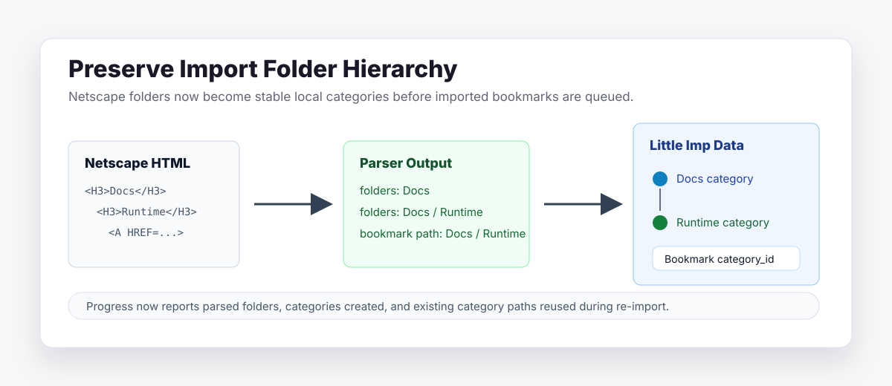

Little Imp Task Report
Preserve Import Folder Hierarchy

Before
Netscape import parsed each bookmark's folder path but discarded folder-only entries and created imported bookmarks without category assignment.
Problem
Browser bookmark exports often use folder structure as the only organization signal. Losing that hierarchy made imported libraries flatter than the source data and left later import preview/remapping work without category groundwork.
Changes Added
- Extended the Netscape parser to return unique folder paths in document order, including empty folders.
- Added parent-scoped category lookup so duplicate folder names under different parents remain distinct.
- Created or reused imported category paths before queuing bookmarks, then assigned each bookmark to the deepest matching category.
- Capped import-created categories to the app-supported three levels and 100-character category names.
- Added import summary and SSE progress fields for parsed folders, categories created, and categories reused.
- Regenerated API, JSON contract, and OpenAPI docs from the source contract.
Result
Netscape imports now preserve source folder hierarchy as Little Imp categories within the app's supported category limits, including empty folders, repeated names under different parents, and stable re-import behavior that reuses existing category paths.
Verification
bun test daemon/src/test/integration/import.test.tsfailed RED for missing folder/progress metadata, route-depth parity, and route-name parity, then passed with 9/9 tests.npm run docs:apiregeneratedAPI.md,docs/api-contract.json, anddocs/openapi.json.npm run docs:api:checkpassed.npm run lintpassed with the existing Fast Refresh warnings in shared UI files.npm run type-checkpassed for frontend and daemon TypeScript.npm run test:daemonpassed with 422/422 daemon tests.npm run checkpassed, including lint, type-check, frontend tests, daemon tests, API docs check, and production build.git diff --checkpassed.
Implementation Notes
The import route keeps the existing asynchronous behavior. Folder paths are parsed during upload, then the background worker resolves category paths before creating bookmarks. Category counters are exposed through the existing progress stream without removing any previous fields. Import-created categories are normalized before lookup and creation so deep or long browser folder paths cannot bypass the category route's depth and name constraints.
Files Changed
daemon/src/import/netscape-parser.tsdaemon/src/routes/import.tsdaemon/src/db/category-repository.tsdaemon/src/db/bookmark-repository.tsdaemon/src/api/contract.tsdaemon/src/test/integration/import.test.tsAPI.mddocs/api-contract.jsondocs/openapi.jsondocs/task-reports/2026/06/2026-06-01-task-107-preserve-import-folder-hierarchy/index.htmldocs/task-reports/2026/06/2026-06-01-task-107-preserve-import-folder-hierarchy/assets/01-import-folder-hierarchy-flow.svg